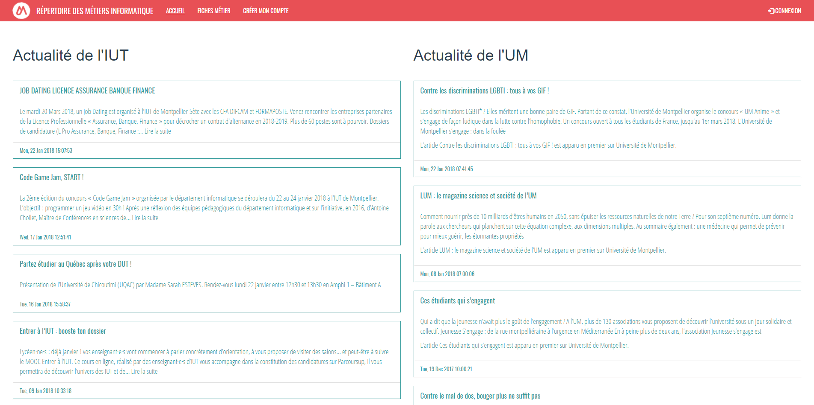
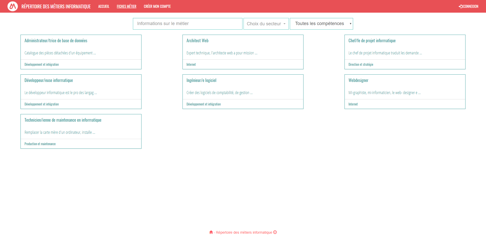
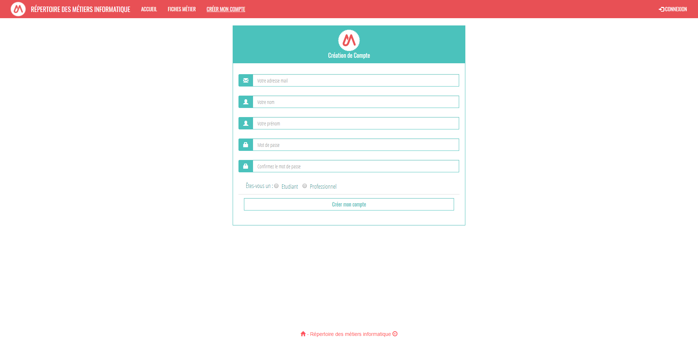
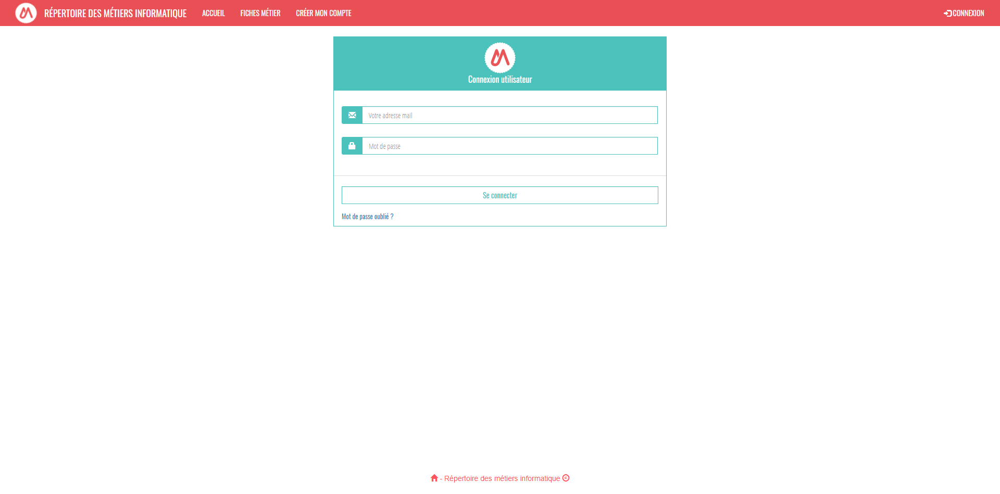
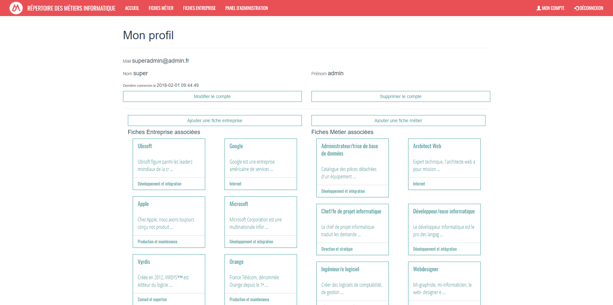
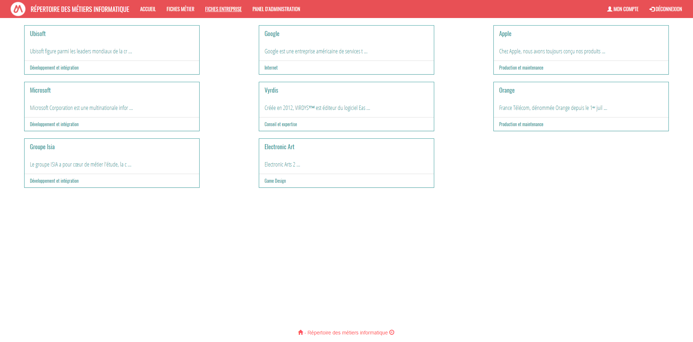
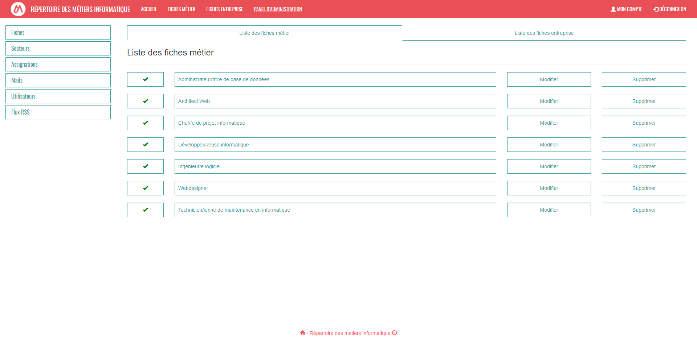

"Répertoire des Métiers de l'Informatique"
❯







Thème : Répertoire de fiches informatives sur les métiers de l'informatique et sur certaines entreprises
Période de réalisation : Octobre 2017 – Décembre 2017
Projet réalisé en groupe.
Technologie, langages, et méthodes utilisées :
- HTML
- CSS
- Bootstrap
- JavaScript
- PHP
- SQL
- Responsive
- Utilisation de GitHub
- Gestion de projet : méthodes agiles (Scrum)